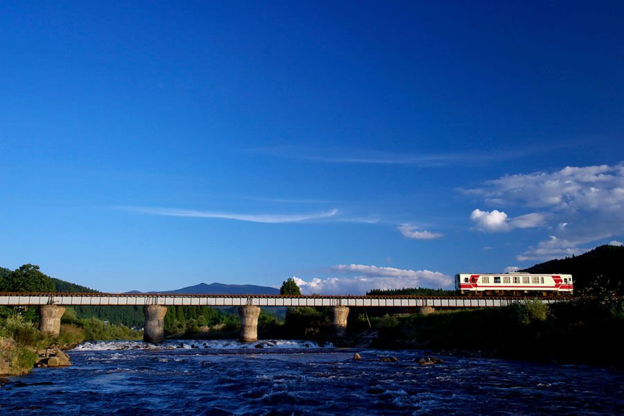
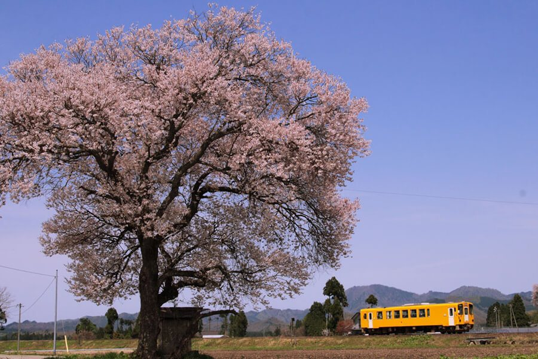
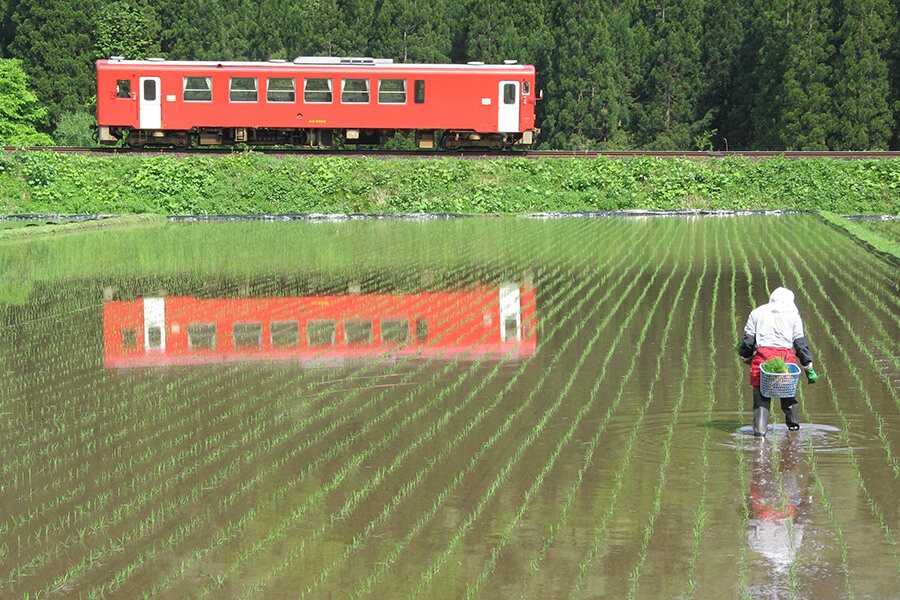
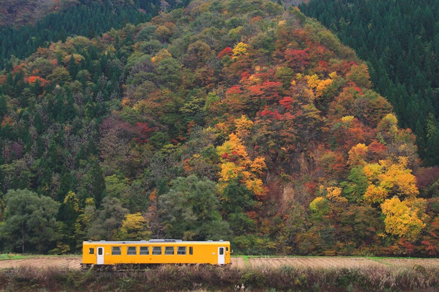
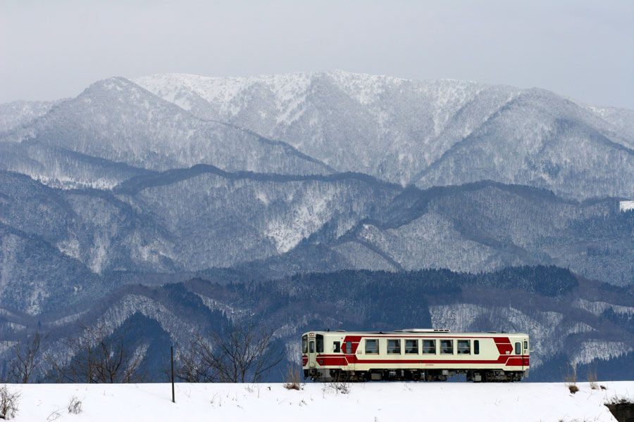
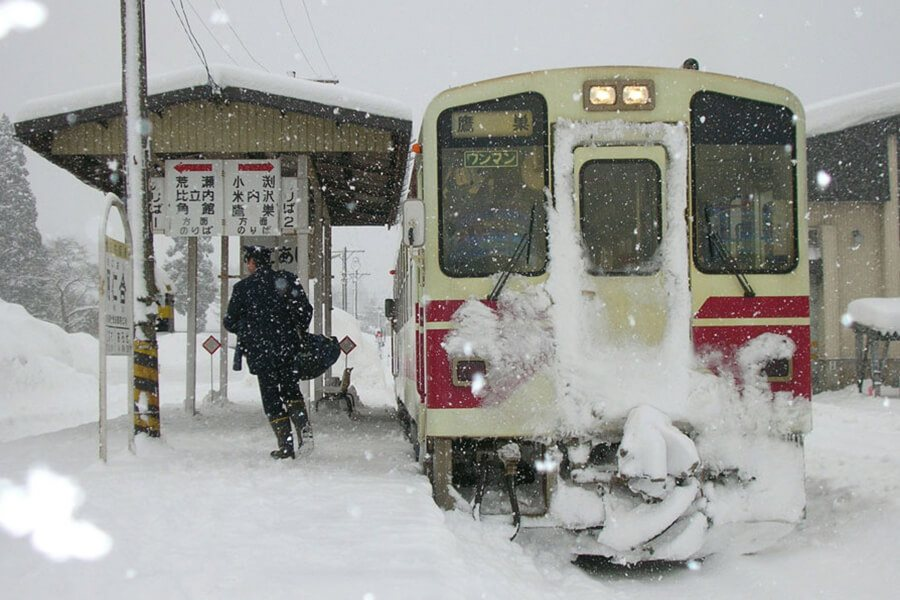

A railway built for the ride itself
The Akita Nairiku Line (秋田内陸線) runs 94.2 km north–south through the mountains west of the Ou range, connecting Kakunodate Station — on the Akita Shinkansen — with Takanosu Station on the JR Ou Main Line. Along the way it threads rice fields, river gorges and cedar forest with barely another building in sight, almost always with a single car. Locals call it the "Smile Rail," for the welcome riders get at the little stations along the line.
Most visitors ride a short stretch, not the whole line — for example Kakunodate to Aniai for Mt. Moriyoshi (about 1.5 hrs), or Kakunodate to Kamihinokinai for the paper-balloon festival (about 30 min). See Plan your trip for timed routes.
What you'll see from the window
The line began as two separate mining and logging railways that weren't joined into one until 1989, which is part of why it winds so deliberately through the landscape rather than taking the direct route. Between June and October, stretches of the line near Ani-Maeda, Obuchi, Ani-Matagi and Ugo-Ota are bordered by elaborate rice-paddy art, planted by local farmers and best seen from the train itself.

The line crosses several river gorges on unobstructed steel bridges with no overhead trusswork, popular with photographers. The bright-red bridge over the Omata River, between Kayakusa and Okashinai stations, is one of the best known.
Seasonal theme trains add to the regular timetable: a firefly-viewing train in July, an ultra-slow scenic train that runs at walking pace through the best views each season, a hina-doll train in February–March, and a Santa train in December. Dates vary by year — check the official site before you plan around one.
Through the seasons
Because the line runs the full length of central Akita, almost every season has its own look from the window.


Late April–May: cherry blossom along the line, including famous solitary trees. June–July: rice planted bright green, with paddy art taking shape through summer.


Mid-October–early November: the line is ranked Akita's most popular foliage spot, especially Kakunodate to Ani-Maeda. December–March: deep snow, with trains running through drifts and quiet white countryside.
Aniai, the line's midpoint
Roughly halfway along the line, Aniai Station is home to the railway's head office and rail yard, in a station building with a red triangular roof — one of "Tohoku's 100 best stations." It's also the jumping-off point for Mt. Moriyoshi's snow monsters, with a tourist welcome counter on the second floor and shared-taxi connections to the gondola base.

Fares & passes
The Nairiku Line is run by a separate company from JR, so the JR Pass doesn't cover it — budget for it separately.
Trains are infrequent — often just a handful a day in each direction, fewer on the quieter northern half. Check the timetable before you go, and plan your return trip first. See Plan your trip for more.
Good to know
- Kakunodate is the easiest place to start or end. It sits on the Akita Shinkansen, so most visitors base themselves there and ride the Nairiku Line as a day trip north.
- One car means limited seats. On weekends in peak foliage or festival season, arrive a little early.
- Little English is spoken at the smaller stations. A translation app and a downloaded timetable help a lot.
- Combine it with Kamihinokinai's paper balloons (February) or the snow monsters of Mt. Moriyoshi (January–March) — see the Kakunodate guide and the Moriyoshi guide.
Official links
Always confirm timetables, fares and seasonal trains with these official sources before you travel.